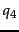

In this section, we discuss a number of challenges that make structured retrieval more difficult than unstructured retrieval. Recall from page 10 the basic setting we assume in structured retrieval: the collection consists of structured documents and queries are either structured (as in Figure 10.3 ) or unstructured (e.g., summer holidays).
The first challenge in structured retrieval is that users want us to return parts of documents (i.e., XML elements), not entire documents as IR systems usually do in unstructured retrieval. If we query Shakespeare's plays for Macbeth's castle, should we return the scene, the act or the entire play in Figure 10.2 ? In this case, the user is probably looking for the scene. On the other hand, an otherwise unspecified search for Macbeth should return the play of this name, not a subunit.
One criterion for selecting the most appropriate part of a document is the structured document retrieval principle :
Structured document retrieval principle. A system should always retrieve the most specific part of a document answering the query.This principle motivates a retrieval strategy that returns the smallest unit that contains the information sought, but does not go below this level. However, it can be hard to implement this principle algorithmically. Consider the query
title#"Macbeth" applied to Figure
10.2 . The title of the tragedy,
Macbeth, and the title of Act I, Scene vii,
Macbeth's castle, are both good hits because they contain the matching term Macbeth. But in this case, the title of the tragedy, the higher node, is preferred. Deciding which level of the tree is right for answering a query is difficult.
Parallel to the issue of which parts of a document to return to the user is the issue of which parts of a document to index. In Section 2.1.2 (page  ), we discussed the need for a document unit or indexing unit in indexing and retrieval. In unstructured retrieval, it is usually clear what the right document unit is: files on your desktop, email messages, web pages on the web etc. In structured retrieval, there are a number of different approaches to defining the indexing unit.
), we discussed the need for a document unit or indexing unit in indexing and retrieval. In unstructured retrieval, it is usually clear what the right document unit is: files on your desktop, email messages, web pages on the web etc. In structured retrieval, there are a number of different approaches to defining the indexing unit.
One approach is to group nodes into non-overlapping pseudodocuments as shown in Figure 10.5 . In the example, books, chapters and sections have been designated to be indexing units, but without overlap. For example, the leftmost dashed indexing unit contains only those parts of the tree dominated by book that are not already part of other indexing units. The disadvantage of this approach is that pseudodocuments may not make sense to the user because they are not coherent units. For instance, the leftmost indexing unit in Figure 10.5 merges three disparate elements, the class, author and title elements.
We can also use one of the largest elements as the indexing unit, for example, the book element in a collection of books or the play element for Shakespeare's works. We can then postprocess search results to find for each book or play the subelement that is the best hit. For example, the query Macbeth's castle may return the play Macbeth, which we can then postprocess to identify act I, scene vii as the best-matching subelement. Unfortunately, this two-stage retrieval process fails to return the best subelement for many queries because the relevance of a whole book is often not a good predictor of the relevance of small subelements within it.
Instead of retrieving large units and identifying subelements (top down), we can also search all leaves, select the most relevant ones and then extend them to larger units in postprocessing (bottom up). For the query Macbeth's castle in Figure 10.1 , we would retrieve the title Macbeth's castle in the first pass and then decide in a postprocessing step whether to return the title, the scene, the act or the play. This approach has a similar problem as the last one: The relevance of a leaf element is often not a good predictor of the relevance of elements it is contained in.
The least restrictive approach is to index all elements. This is also problematic. Many XML elements are not meaningful search results, e.g., typographical elements like <b>definitely</b> or an ISBN number which cannot be interpreted without context. Also, indexing all elements means that search results will be highly redundant. For the query Macbeth's castle and the document in Figure 10.1 , we would return all of the play, act, scene and title elements on the path between the root node and Macbeth's castle. The leaf node would then occur four times in the result set, once directly and three times as part of other elements. We call elements that are contained within each other nested . Returning redundant nested elements in a list of returned hits is not very user-friendly.
Because of the redundancy caused by nested elements it is common to restrict the set of elements that are eligible to be returned. Restriction strategies include:
If the user knows the schema of the collection and is able to specify the desired type of element, then the problem of redundancy is alleviated as few nested elements have the same type. But as we discussed in the introduction, users often don't know what the name of an element in the collection is (Is the Vatican a country or a city?) or they may not know how to compose structured queries at all.
A challenge in XML retrieval related to nesting is that we may need to distinguish different contexts of a term when we compute term statistics for ranking, in particular inverse document frequency ( idf ) statistics as defined in Section 6.2.1 (page  ). For example, the term Gates under the node author is unrelated to an occurrence under a content node like section if used to refer to the plural of gate. It makes little sense to compute a single document frequency for Gates in this example.
). For example, the term Gates under the node author is unrelated to an occurrence under a content node like section if used to refer to the plural of gate. It makes little sense to compute a single document frequency for Gates in this example.
One solution is to compute idf for XML-contextterm pairs, e.g., to compute different idf weights for author#"Gates" and section#"Gates". Unfortunately, this scheme will run into sparse data problems - that is, many XML-context pairs occur too rarely to reliably estimate df (see Section 13.2 , page 13.2 , for a discussion of sparseness). A compromise is only to consider the parent node  of the term and not the rest of the path from the root to
of the term and not the rest of the path from the root to  to distinguish contexts. There are still conflations of contexts that are harmful in this scheme. For instance, we do not distinguish names of authors and names of corporations if both have the parent node name. But most important distinctions, like the example contrast
to distinguish contexts. There are still conflations of contexts that are harmful in this scheme. For instance, we do not distinguish names of authors and names of corporations if both have the parent node name. But most important distinctions, like the example contrast author#"Gates" vs. section#"Gates", will be respected.
In many cases, several different XML schemas occur in a collection since the XML documents in an IR application often come from more than one source. This phenomenon is called schema heterogeneity or schema diversity and presents yet another challenge. As illustrated in Figure 10.6 comparable elements may have different names: creator in  vs. author in
vs. author in  . In other cases, the structural organization of the schemas may be different: Author names are direct descendants of the node author in
. In other cases, the structural organization of the schemas may be different: Author names are direct descendants of the node author in  , but there are the intervening nodes firstname and lastname in
, but there are the intervening nodes firstname and lastname in  . If we employ strict matching of trees, then
. If we employ strict matching of trees, then  will retrieve neither
will retrieve neither  nor
nor  although both documents are relevant. Some form of approximate matching of element names in combination with semi-automatic matching of different document structures can help here. Human editing of correspondences of elements in different schemas will usually do better than automatic methods.
although both documents are relevant. Some form of approximate matching of element names in combination with semi-automatic matching of different document structures can help here. Human editing of correspondences of elements in different schemas will usually do better than automatic methods.
Schema heterogeneity is one reason for query-document mismatches like  and
and  . Another reason is that users often are not familiar with the element names and the structure of the schemas of collections they search as mentioned. This poses a challenge for interface design in XML retrieval. Ideally, the user interface should expose the tree structure of the collection and allow users to specify the elements they are querying. If we take this approach, then designing the query interface in structured retrieval is more complex than a search box for keyword queries in unstructured retrieval.
. Another reason is that users often are not familiar with the element names and the structure of the schemas of collections they search as mentioned. This poses a challenge for interface design in XML retrieval. Ideally, the user interface should expose the tree structure of the collection and allow users to specify the elements they are querying. If we take this approach, then designing the query interface in structured retrieval is more complex than a search box for keyword queries in unstructured retrieval.
We can also support the user by interpreting all parent-child relationships in queries as descendant relationships with any number of intervening nodes allowed. We call such queries extended queries . The tree in Figure 10.3 and  in Figure 10.6 are examples of extended queries. We show edges that are interpreted as descendant relationships as dashed arrows. In , a dashed arrow connects book and Gates. As a pseudo-XPath notation for , we adopt book//#"Gates": a book that somewhere in its structure contains the word Gates where the path from the book node to Gates can be arbitrarily long. The pseudo-XPath notation for the extended query that in addition specifies that Gates occurs in a section of the book is book//section//#"Gates". It is convenient for users to be able to issue such extended queries without having to specify the exact structural configuration in which a query term should occur - either because they do not care about the exact configuration or because they do not know enough about the schema of the collection to be able to specify it.
In Figure 10.7 , the user is looking for a chapter entitled FFT ( ). Suppose there is no such chapter in the collection, but that there are references to books on FFT (
). Suppose there is no such chapter in the collection, but that there are references to books on FFT ( ). A reference to a book on FFT is not exactly what the user is looking for, but it is better than returning nothing. Extended queries do not help here. The extended query
). A reference to a book on FFT is not exactly what the user is looking for, but it is better than returning nothing. Extended queries do not help here. The extended query  also returns nothing. This is a case where we may want to interpret the structural constraints specified in the query as hints as opposed to as strict conditions. As we will discuss in Section 10.4 , users prefer a relaxed interpretation of structural constraints: Elements that do not meet structural constraints perfectly should be ranked lower, but they should not be omitted from search results.
also returns nothing. This is a case where we may want to interpret the structural constraints specified in the query as hints as opposed to as strict conditions. As we will discuss in Section 10.4 , users prefer a relaxed interpretation of structural constraints: Elements that do not meet structural constraints perfectly should be ranked lower, but they should not be omitted from search results.
![\includegraphics[width=12cm]{xmldocfuhr.eps}](img621.png)